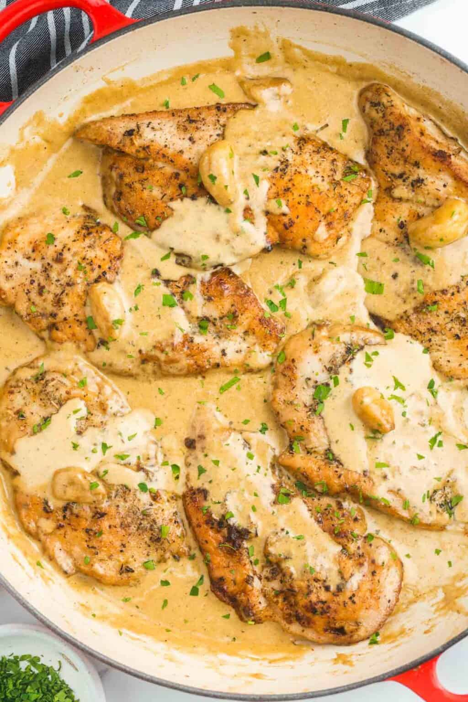

Creamy Garlic Chicken

Ingredients
Chicken
- Chicken Breast
- 4 tablespoon flour
- 4 tablespoon grated Cheese
- 2 teaspoon salt
- 1 teaspoon garlic powder
- 1/2 teaspoon black pepper
Sauce
- 5 tablespoon olive oil
- 2 tablespoon butter
- 1 onion finely chopped
- 10-12 garlic cloves
- 1 1/4 cup chicken stock
- 1 1/4 heavy cream
- 1/2 cup grated cheese
- 2 tablespoon fresh parsley to serve
Instructions
- Season the chicken with salt, garlic powder and pepper.
- In a shallow bowl combine the flour, parmesan cheese. Dredge the chicken in the flour mixture. Shake off excess
- Heat 2 tablespoons of oil and 1 tablespoon butter in a large skillet over medium heat. swirl pan to coat evenly
- Fry 2-3 chicken breasts until golden on each side and set aside.
- Wipe pan over with a sheet of paper towel. Repeat with remaining oil, butter and chicken breasts.
- Reduce the heat to medium. Saute the onion in the remaining oil/juices in the pan until softened.
- Smash 6 whole cloves of garlic with the blunt edge of a back of a knife
- Add the remaining oil to the pan and heat through, mixing it through the onions. Saute smashed garlic cloves and whole garlic cloves until fragrant. Add broth to deglaze the pan. Scrape up any browned bits and let simmer and reduce to half.
- Reduce the heat to medium low. Pour in the cream. Bring the suce to a gentle simmer for about 2-3 minutes, combining all of the flavours together.
- Mix in the parmesan cheese. Continue cooking gently for about 2-3 minutes until cheese melts while stirring ocassionaly. Season with salt and pepper to your taste.
- Add the chicken back into the pan and let simmer for a further 2-3 minutes to thicken the sauce to your liking. the chicken breast will soak up all of the delicious flavours.
- Garnish with parsely and a little cracked black pepper.